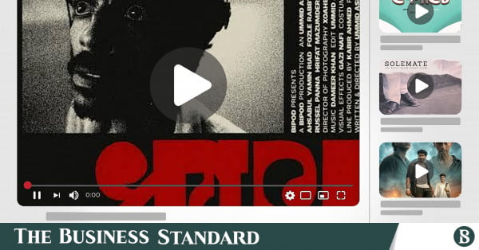
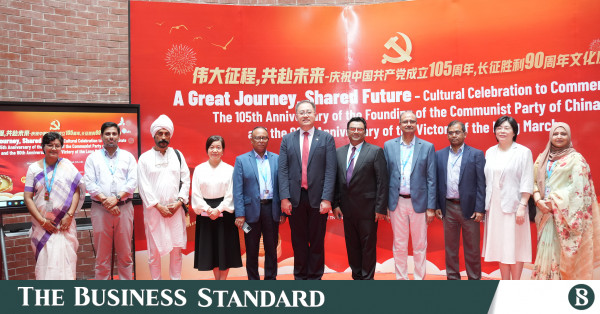
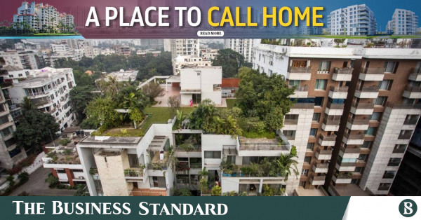
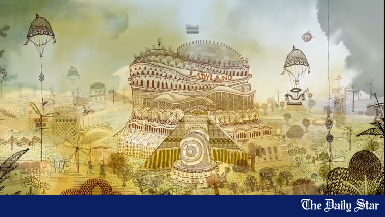

Internship Reports
This section will detail the professional insights and outcomes gained during my comprehensive internship programs. Documentation and final reports are currently being curated for presentation.

Bangladesh's Indie Filmmakers Look for a New Home in YouTube
Exploring how a new generation of independent filmmakers in Bangladesh is bypassing traditional distribution to build audiences directly.
Deshi Cupid: In the Age of Dating Apps, Ghotoks Go Digital
An in-depth look at how traditional matchmaking is evolving and adapting to the digital age in modern Bangladesh.

‘A Great Journey, Shared Future’: When a Piece of China Arrived at ULAB
Coverage of cross-cultural exchange and university cultural events highlighting international relations.

Homes That Let You Breathe: Why Homebuyers Are Choosing Greenery and Community
Investigating the shifting preferences of modern homebuyers towards sustainable and community-centric living spaces.

“In Rokeya’s Writing, I See a Universal Truth”
A narrative deep-dive into the enduring relevance of Begum Rokeya's literature and its universal themes.

The Dual Lives Of Bangladeshi Young Footballer
A short comparative feature profiling two young footballers on divergent paths after representing Bangladesh.
Documentary & Media Production
Highlighting involvement in narrative development, archival verification, and video production work.
Additional Initiatives
Further professional work and cross-disciplinary collaborations.